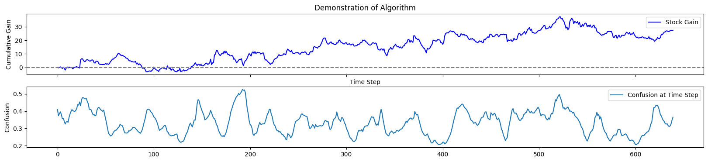

Projects
Time Feature Jointly Aware Deep Reinforcement Learning (TFJ-DRL) Optimization
An exploritory project improving on the interpretibility of the TFJ-DRL model using XAI techniques to break open the black-box TAM-GRU mechanism. To do this, I attempt to use a an autoencoder to predict anomalies in the hidden state of the TAM-GRU mechanism.
Supervised learning methods are difficult to achieve online learning, due to the cost of training. They attempt to predict stock prices of the next time point, but accuracy of price prediction results in second error propagation during translation from price prediction to trading actions. Reinforcement learning (RL) methods lack the ability to perceive and represent environment features, as well as the ability to dynamically consider past states and changing trends. TFJ-DRL uses both supervised an reinforcement learning to represent the environment and act within environment, respectively.
The above is a demonstatration of TFJ-DRL (top) and my addition (below). At a given timestep, the autoencoder generates a loss score from encoding and decoding the hidden state vector. I dub this loss `confusion', and motivate it's use as a metric for how familiar the model is with the current environment. Higher confusion infers less familiarity, so we use confusion to determine when the model is liable to lose money before it does.
Knee Alignment Research
Orthopedic surgeons use many measurements and statistics to plan for robot-assisted total knee arthroplasty. Among these measurements are body mass index (BMI), medial-proximal tibial angle (MPTA) and lateral-distal femoral angle (LDFA). I used deep learning to transform these measurements into feature representations, and regressed these features to predict optimal post-surgical knee alignments from pre-operative values.
This chart shows preoperative aHKA (x-axis) and postoperative aHKA (y-axis). aHKA is the additive difference between the LDFA and MPTA measurements.
Washington and Lee oSTEM Chapter
I started the Washington and Lee oSTEM chapter because I believe the externalities of artificial intelligence and beyond come as a direct result of lack of diversity within the field of AI and STEM. With the W&L oSTEM Network, LGBTQ+ students and allies at Washington and Lee can amplify their voices within the field of AI, thereby addressing this issue through inclusion.
With today's breakneck pace of technological innovation, AI and machine learning algorithms have the potential of becoming ubiquitous within the STEM field and beyond. However, this does not guarantee the applications of AI algorithms will only yield positive outcomes. The proliferation of algorithmic cruelty due to poorly implemented AI classifiers, for example, presents a pressing social dilemma. The initiative of this chapter is to introduce LGBTQ+ students and allies to resources for expanding their career in STEM. W&L’s oSTEM Network will extend oSTEM’s outreach to W&L’s student body, thereby making oSTEM’s resources accessible W&L students. Through oSTEM, our chapter will provide networking channels with oSTEM’s digital chapter registry and membership discord channel. Through oSTEM, our chapter can provide expert and financial support with oSTEM's many resources.
CartPole
Utilizing reinforcement learning, I trained an AI to survive the OpenAIGym CartPole environment for 500 steps. The training method was a standard Q-learning algorithm with an expected value matrix (2D NumPy array) data structure.

The CartPole environment's state space is continuous, so storing every possible state in an array is not feasible. Thus, for Q-learning to work the buckets hyperparameter is necessary as it discretizes the state space. But - you might object - multi-layered perceptions are capable of handling a continuous state space with no extra hyperparameters. True, yet SARSA algorithms typically require several more hyperparameters than Q-learning. Therefore by discretizing we may learn CartPole with less external input.
-
Hyperparameters:
- buckets (discretizes state space to) : 4-tuple=(3, 3, 6, 6)
- neps (number of training episodes)int=1000
- alpha : float=0.1
- gamma (learning coefficient) float=1.0 --this means it does nothing
- epsilon=0.1, decay=25 (dynamic epsilon values with 25 as annealing coefficient and 0.1 as ultimate value)
Pendulum
Utilizing reinforcement learning, I trained an AI to work in the OpenAIGym Pendulum environment. The idea is to swing the pendulum straight upwards: against gravity. I trained it using a SARSA algorithm with the PyTorch neural network data structure.

As oppesed to the CartPole environment, Pendulum is motivated by mitigating penalty. Pendulum's environment has both a continuous action space and state space. While SARSA training can handle a continuous state space, I still had to discretize the action space. This is where the n-actions hyperparameter comes in. Admitedly, an actor-critic model with continuous probability distributions would yeild less hyperparameters.
-
Hyperparameters:
- gamma (Discount rate for Q_target): float=0.95
- neps (Number of epsidoes to run): int=300
- batch-size (Mini-batch size): int=16
- hidden-dim (Hidden dimension): int=90
- capacity (Replay memory capacity): int=50000 --this didn't end up mattering
- max-episode (e-Greedy target episode where epsilon=min-eps): int=200
- min-eps (Min epsilon): float=0.00175
- n-actions (Discrete number of actions): int=4